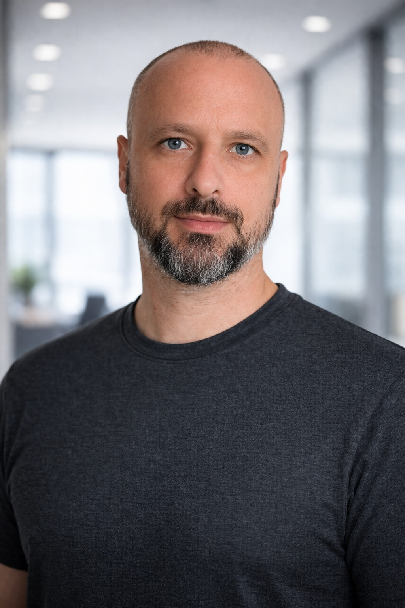

O nas
Jetzt & Dahanna Technologies to niezależne jednoosobowe studio prowadzone przez Tobiasza Blankenhorna niedaleko Stuttgartu, w szwabskiej części południowych Niemiec.

Dlaczego powstało to studio
Zacząłem tworzyć małe aplikacje, bo wielokrotnie trafiałem na rzeczy, które mogłyby być prostsze, uczciwsze i bardziej skupione na swoim zadaniu. Chciałem budować produkty, które dobrze robią jedną jasno określoną rzecz, a decyzje techniczne i biznesowe wspierają ten cel zamiast od niego odciągać.
Idea Jetzt & Dahanna jest prosta: zrozumieć zadanie, starannie zaprojektować doświadczenie, użyć technologii tam, gdzie naprawdę pomaga, i pominąć to, co nie jest potrzebne.
Kto za tym stoi
Nazywam się Tobias Blankenhorn. Zawodowo pracuję jako Voice UX Engineer w branży motoryzacyjnej. Ukończyłem studia magisterskie z Behavioral Science na Radboud University w Nijmegen, gdzie studiowałem w Behavioral Science Institute, zajmując się między innymi interakcją człowiek–maszyna.
To doświadczenie nadal wpływa na moje podejście do oprogramowania. Interesuje mnie, co technologia rzeczywiście daje osobie, która z niej korzysta: czy interakcja jest zrozumiała, czy funkcja uzasadnia swoją złożoność i czy model biznesowy traktuje ludzi uczciwie.
Małe z wyboru
Jetzt & Dahanna to małe niezależne studio, które prowadzę obok głównej pracy i które koncentruje się na własnych produktach, a nie projektach dla klientów.
Niezależność pozwala mi utrzymywać prostą infrastrukturę, świadomie określać zakres produktów i podejmować decyzje zgodnie z tym, czego potrzebuje sam produkt. Oznacza to również ostrożność wobec usług i kosztów cyklicznych, gdy prostsze rozwiązanie działa równie dobrze.
Dlaczego „Jetzt & Dahanna”?
Jetzt & Dahanna oznacza w dialekcie szwabskim mniej więcej „teraz & tutaj”. To małe nawiązanie do miejsca pochodzenia studia — okolic Stuttgartu w Szwabii — ale znaczenie pasuje też do sposobu, w jaki chcę tworzyć oprogramowanie: zacząć od realnej potrzeby, rozwiązać ją uważnie i skupić się na tym, co jest użyteczne tu i teraz.
Nazwa jest więc zarówno lokalnym podpisem, jak i przypomnieniem, by tworzyć rzeczy konkretne, praktyczne i skupione na ludziach, którzy naprawdę z nich korzystają.